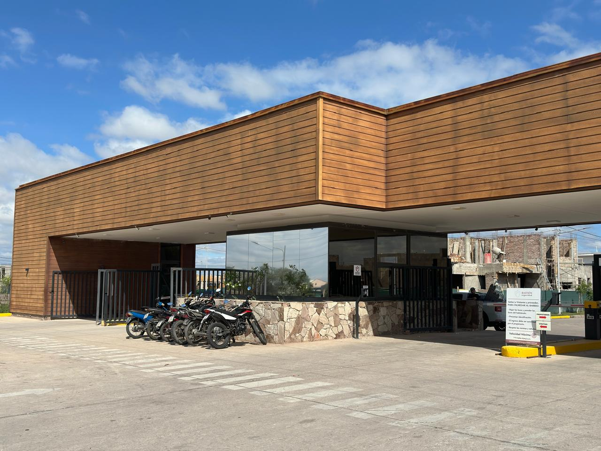
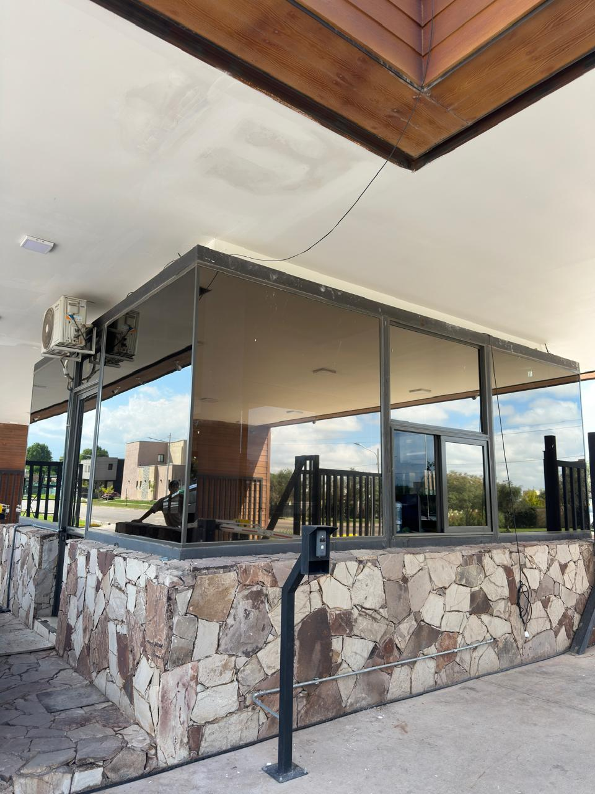
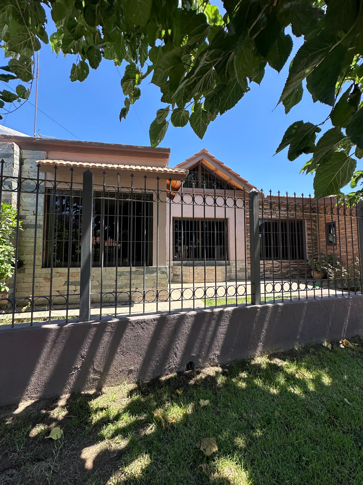
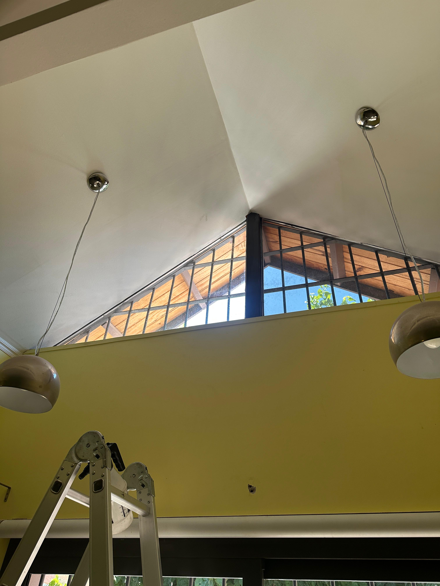
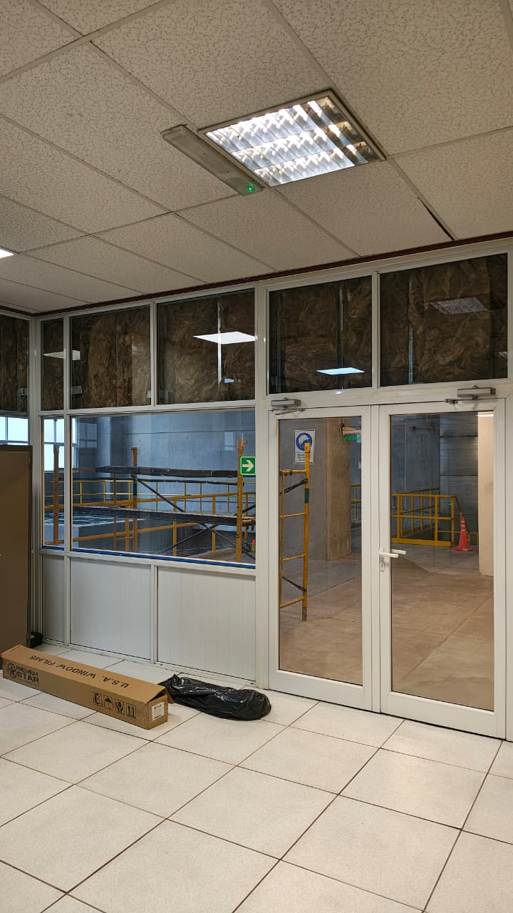
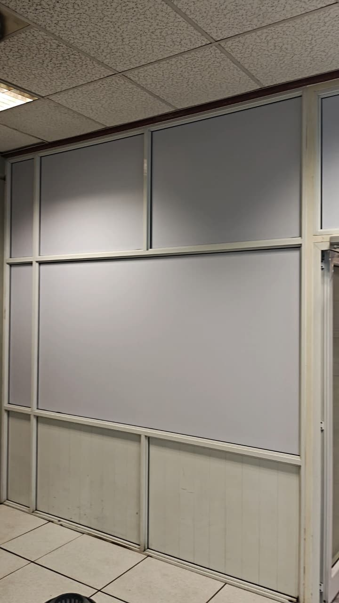
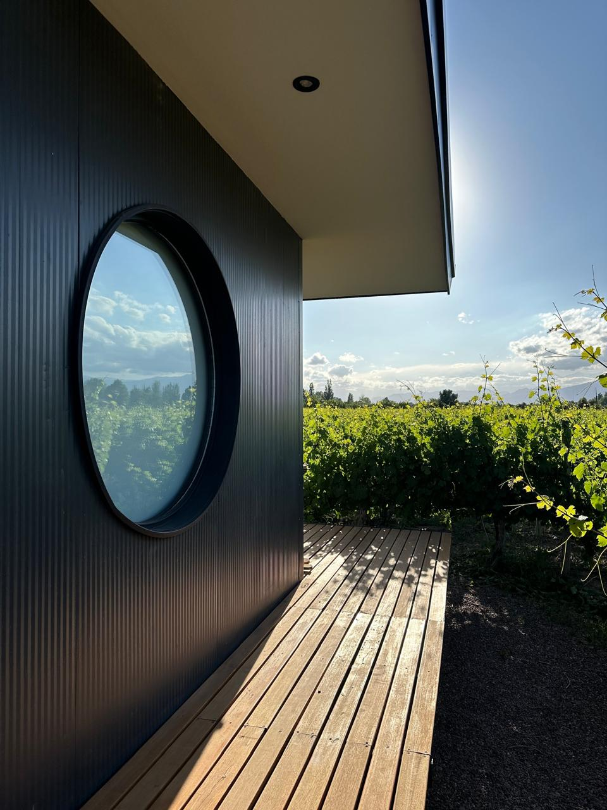
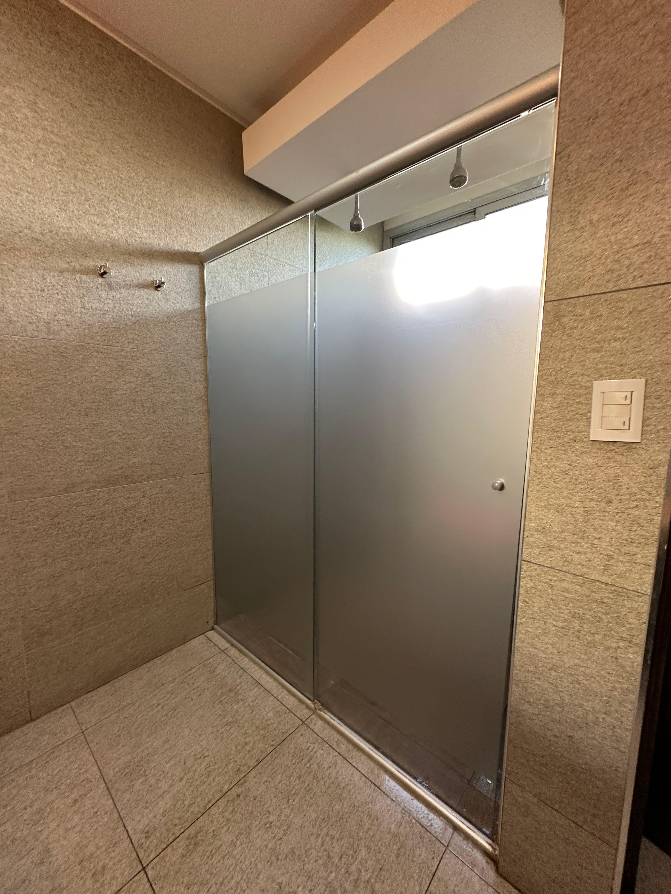
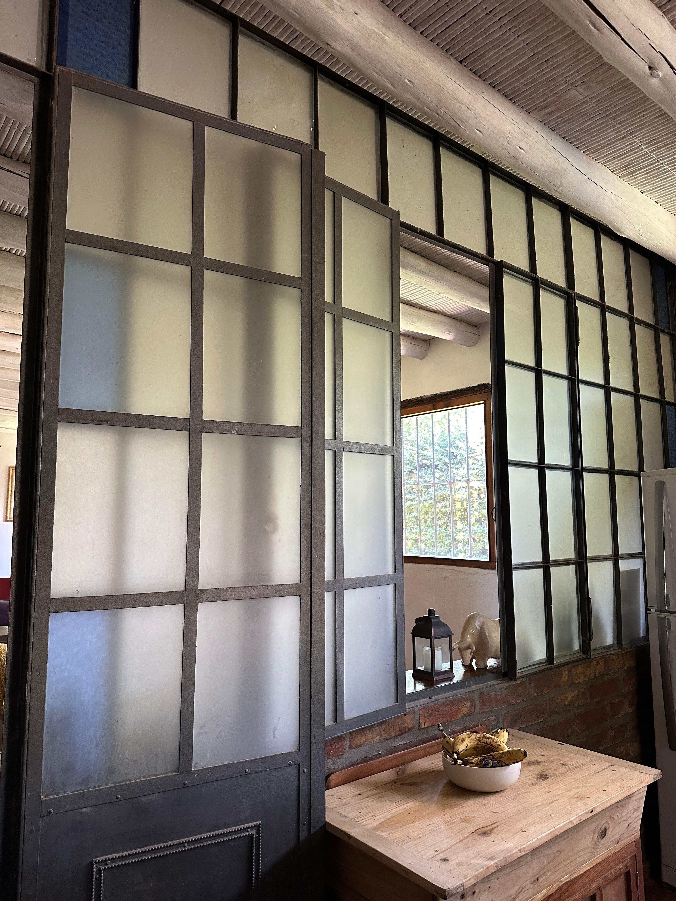
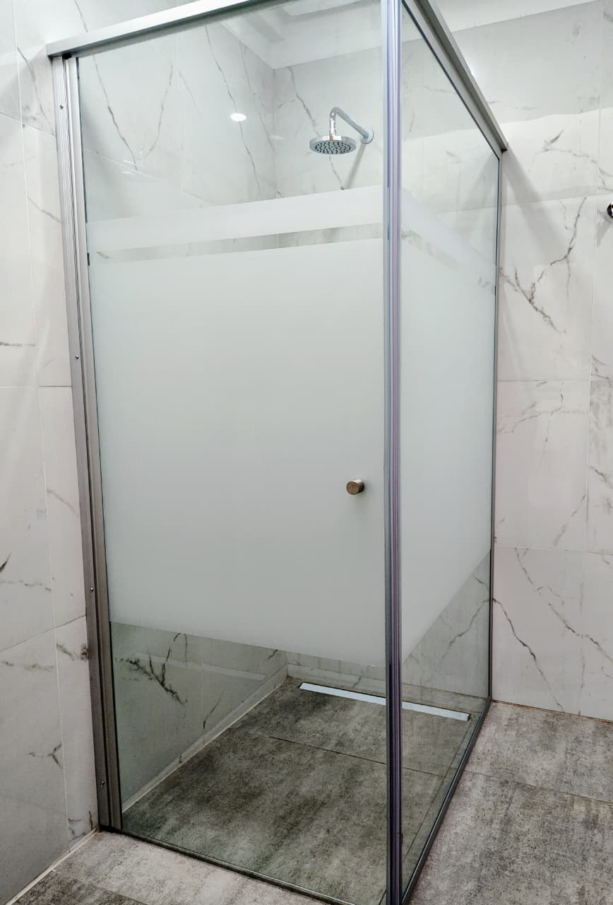

Casos de Éxito
Proyectos reales donde nuestras soluciones arquitectónicas transformaron problemas críticos en confort y diseño.
Tupungato, Valle de Uco
Bodega Andeluna (Lodges)
Solución: Nano-Cerámica 70%
Desafío: Altos niveles de transferencia térmica y deslumbramiento en los paños vidriados de los lodges.
Solución PolArq: Instalación de film Nano-Cerámico al 70%. Se priorizó la transparencia para no alterar la estética de la fachada ni bloquear la visión hacia la cordillera.
Resultado: Rechazo térmico superior, protección UV integral y preservación visual absoluta del paisaje.




Cruz de Piedra, Maipú
Control de Acceso (Barrio Privado)
Solución: Espejado Silver Pro 15%
Desafío: Exposición visual del personal de seguridad hacia el exterior y deslumbramiento en monitores.
Solución PolArq: Aplicación de Silver Pro 15% para crear un efecto espejo de alta reflectividad externa, manteniendo visión unidireccional.
Resultado: Privacidad total diurna. Los guardias controlan el ingreso sin ser vistos, mejorando la operatividad.
Gran Mendoza
Residencia Privacidad Extrema
Solución: Nano-Cerámica 5%
Desafío: Ventanales frontales y en altura con severa exposición al sol de tarde, causando falta de intimidad y sofocamiento.
Solución PolArq: Instalación especializada en altura de film Nano-Cerámico al 5%. Máxima absorción IR con un acabado oscuro elegante y sobrio.
Resultado: Reducción térmica radical y eliminación total del deslumbramiento interior sin efecto espejo.




Cacheuta
Central Hidroeléctrica
Solución: Sólido Blanco (Opaque White)
Desafío: Ocultar material aislante acústico expuesto detrás de los paneles vidriados de la sala de operaciones.
Solución PolArq: Revestimiento con film Sólido Blanco 100% opaco. Ejecución limpia sin obra húmeda.
Resultado: Los cristales se transformaron en paneles ciegos. Integración corporativa inmaculada, rápida y de alto impacto visual.
Múltiples Locaciones
Diseño y División de Ambientes
Solución: Esmerilado Gris UV
Desafío: Proveer privacidad en zonas sensibles (baños, oficinas) sin restringir la luz ni cambiar cristales.
Solución PolArq: Aplicación versátil de film esmerilado translúcido con cortes a medida.
Resultado: Privacidad bidireccional permanente, aprovechamiento de luz natural y estética minimalista.



